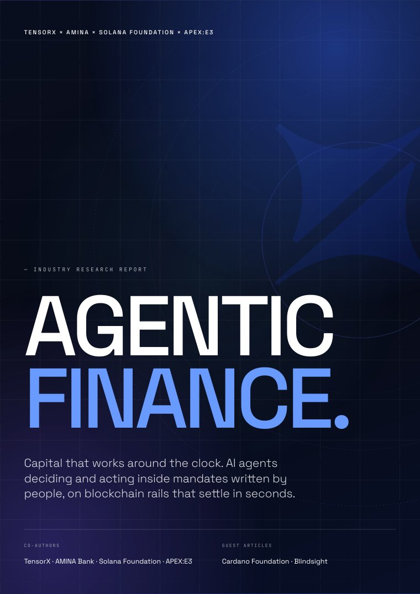

Agentic
Finance
Report.
Mapping the road for institutional capital managed by AI agents.

AI agents will run institutional capital.
The only question is what they are allowed to do.
In the twelve months to April 2026, agents settled roughly 176 million payments on public blockchains, most worth between one and ten cents. The value is trivial. The count is not. Artificial intelligence, blockchain settlement and tokenised assets were three separate stories, and they are now one system: software can hold, allocate and move capital without waiting for a person.
Accountability stays where it was. Enforcement moves from review after the fact to a boundary set before the agent acts: the mandate, the identity it carries and the rails it may use.
From the reportAgentic Finance: capital managed continuously rather than periodically, by software acting inside mandates that people write and can withdraw, on rails that settle at machine speed.
What the evidence shows.
BlackRock's Digital Assets Research team published The Machine-Native Economy in September 2026: AI is machine-native intelligence, digital assets are machine-native money, and agentic commerce needs rails built for machine speed. Its figures put the rails this report describes in context.
BlackRock is not a participant in this report and has not reviewed or endorsed it.
Weeks to deploy, months to govern.
Start with idle cash, where the mandate fits on a page.
Agent-driven settlement is real, and still small.
| Metric | Value |
|---|---|
| On-chain agent transactions | ~176m |
| Value settled | ~$73m |
| Typical transaction | 1–10c |
Twelve months to April 2026. The count supports this report's argument; the dollar volume does not yet. Keyrock, via Hashed Emergent
Stablecoins now move volume in the same range as the card networks.
| Network | US$ trillions |
|---|---|
| Stablecoins | 11.2 |
| Visa | 16.7 |
| Mastercard | 10.6 |
Not directly comparable: Visa reports total volume including cash, Mastercard reports gross dollar volume, and the stablecoin figure is adjusted to exclude internal transfers and high-frequency activity. Visa Onchain Analytics and Allium, via BlackRock, September 2026
And they are growing at a different rate.
| Rail | CAGR |
|---|---|
| Stablecoin volume | 80% |
| ACH, the US bank payments network | 8.5% |
ACH moved $93 trillion in 2025 between US bank accounts, from a far larger base. Nacha and Visa Onchain Analytics, via BlackRock, September 2026
What follows if it scales.
| Metric | Value |
|---|---|
| Of US e-commerce handled by AI agents by 2030 | 15–25% |
| Addressable capital over five years | $4.8tn+ |
| A year on a $500 million treasury, from continuous intraday allocation | ~200 bps |
The first is a forecast; the others are model outputs. Bain & Company · Modelled by APEX:E3, not measured
Before the machine acts, five things must be true. Each one now has an owner.
-
Regulated foundationThe asset is held by a regulated institution.Ready
-
Execution and settlementThe rail settles finally and cheaply.Ready
-
Sovereign inferenceThe reasoning runs where the institution can see and trust it.Ready
-
OrchestrationThe decision is attributable to the agent that made it.Ready
-
Verifiable identityThe agent is identifiable as acting for a legal entity.Ready
Co-authors
Sovereign AI infrastructure for regulated industries.
FINMA-regulated Swiss bank for digital assets.
The public ledger for agent-scale settlement.
Enterprise AI infrastructure for capital markets, operator of ALICE.
Verifiable organisational identity for autonomous agents: the vLEI on public blockchains, through Veridian and the KERI/ACDC ecosystem.
Guest contributions
Runtime protection for AI agents against prompt injection and data poisoning.
Early-stage investor in digital assets and AI since 2019. Guest article, “Owning the Frontier Before It Is Priced,” by David Long, Lukas Etter and Kaya Tilev, General Partners. Also the report’s co-publishing partner.
Eight chapters and two guest contributions.
- ForewordBuild it so that you can answer for itTim Grant
- 01Executive SummaryMarcus Maute
- 02What Is Agentic Finance?Marcus Maute
- 03The Regulated Banking FoundationAMINA Bank
- 04Why Solana Is the Execution LayerSolana Foundation
- 05Sovereign AI InfrastructureTensorX
- 06ALICE: The Orchestration LayerAPEX:E3
- 07Verifiable Identity, the Trust LayerCardano Foundation
- GuestThe Attack That Never Breaks a RuleBlindsight
- GuestOwning the Frontier Before It Is PricedCV VC
- 08Conclusions & RecommendationsMarcus Maute
Launched at CV Summit.
Switzerland’s Largest Institutional Digital Assets & AI Conference
Official launch of the Agentic Finance ReportWhat is CV Summit?
CV Summit is Switzerland’s leading institutional digital assets & AI business conference uniting 3’000+ attendees to explore the forces reshaping the global economy. You can expect two days jam-packed with content across three stages, and plenty of networking opportunities.
The Agentic Finance Report is launched at CV Summit 2026. CV VC is the report’s official co-publishing partner and shares it with CV Summit’s press partners.
- 3,000+Attendees
- 200Speakers
- 3Stages & workshops
- 1,000m²Exhibition space
Summit tracks
Explore how institutions are creating more efficient, secure, and interconnected financial markets through stablecoins, digital custody, and more.
Explore tokenized securities, institutional DeFi, digital exchanges, trading infrastructure, and the evolution of programmable financial markets.
Explore AI in finance, autonomous systems, intelligent organizations, and the rise of agentic intelligence as a new layer of value creation.
Explore how investment strategies are adapting to embrace innovation and redefining wealth creation for the future.
Partners of CV Summit are named here as partners of the event. They are not authors of or participants in this report, and they have not reviewed or endorsed it.
Content in this section is taken from cvsummit.ch and cvvc.com.
The window is open.
Autonomy inside a mandate is a control environment, and every part of it now has an owner.
How to cite
Maute, M. (ed.), with TensorX, AMINA Bank, Solana Foundation, APEX:E3 and Cardano Foundation; guest contributions by Blindsight and CV VC (2026). Agentic Finance Report: How Autonomous AI Agents Are Reconfiguring the Management, Movement and Settlement of Institutional Capital. Industry report, edition 1.0. Released at CV Summit, Zurich, 29–30 September 2026. agenticfinancereport.com
Report disclaimer (AMINA Bank, page 021 of the report)
Disclaimer: research and educational content
This disclaimer is part of the Agentic Finance Report, printed on page 021, and applies to the report. It is reproduced here word for word. For this website, see the imprint and privacy notice.
This document has been prepared and co-published by AMINA Bank AG (“AMINA”), the Solana Foundation, TensorX, APEX:E3 and the Cardano Foundation together as named co-authors of this report (together, the “Co-Authors”). AMINA is a Swiss licensed bank and securities dealer with its head office and legal domicile in Switzerland. It is authorised and regulated by the Swiss Financial Market Supervisory Authority (“FINMA”). The report also includes guest contributions by Blindsight Technologies AG and CV VC AG (together, the “Guest Contributors”). The Guest Contributors are not Co-Authors. Each Guest Contributor is responsible for its own contribution, and the views expressed in a guest contribution are those of its authors.
This document is published solely for informational, research and educational purposes. It is not an advertisement, solicitation, offer, invitation, recommendation or inducement to buy or sell any financial instrument, digital asset, token, security or other investment, or to participate in any particular investment strategy, transaction, product or service. Nothing in this document constitutes investment advice, financial advice, legal advice, tax advice or any other form of professional advice.
This document may be made available by the Co-Authors, including as a freely downloadable PDF, through their respective websites, blogs, newsletters, social media accounts and other official communication channels, in each case subject to applicable law and regulation. Recipients may download, read and share this document for informational and non-commercial purposes, provided that the document is not modified, the Co-Authors are appropriately identified, and this disclaimer remains included in full. No part of this document may be altered, misrepresented, sold, incorporated into a commercial product, or used in a misleading context without the prior written consent of the relevant Co-Authors.
This document is not directed to, and is not intended for distribution to or use by, any person or entity that is a citizen or resident of, or located in, any jurisdiction where such distribution, publication, availability or use would be contrary to applicable law or regulation, or would subject any Co-Author to any registration, licensing or other regulatory requirement in that jurisdiction. Recipients are responsible for informing themselves about and observing any applicable legal or regulatory restrictions.
The information contained in this document is based on sources considered by the Co-Authors to be reliable at the time of publication, including publicly available information and information provided or reviewed by one or more of the Co-Authors or Guest Contributors. However, no representation or warranty, express or implied, is made as to the accuracy, completeness, reliability, timeliness or fitness for any particular purpose of the information contained in this document. The information is not intended to be a complete statement or summary of the matters discussed.
The Co-Authors do not undertake any obligation to update, amend or keep current the information contained in this document, whether as a result of new information, future events, changes in market conditions, regulatory developments or otherwise. Statements in this document are made as of the date of publication unless otherwise indicated.
Any statements, estimates, projections, opinions, assumptions, scenarios or forward-looking statements contained in this document are for informational and illustrative purposes only. They are subject to change without notice and may not materialise. They should not be relied upon as predictions, guarantees or assurances of future performance, outcomes or results.
References in this document to particular protocols, networks, digital assets, tokens, financial instruments, products, services, companies or market participants are for explanatory purposes only. Such references do not constitute an endorsement, recommendation or assessment of suitability by any Co-Author. Any financial instruments, digital assets, tokens, products or services described or referred to in this document may not be available, suitable or lawful for all recipients or in all jurisdictions.
Nothing in this document constitutes a representation that any investment, strategy, product or service is suitable or appropriate for any recipient’s individual circumstances. Investments and digital assets involve risks, including the potential loss of capital, market volatility, liquidity risk, operational risk, technology risk, regulatory risk and counterparty risk. Recipients should make their own independent assessment and seek appropriate professional advice, including legal, tax, regulatory, accounting and financial advice, before making any decision based on or connected with the information in this document.
Any formulas, models, calculations, prices, yields, returns, examples or scenarios included in this document are provided solely for informational or explanatory purposes. They do not represent valuations for individual investments, executable prices, firm quotes, commitments, guarantees or assurances that any transaction can or could have been entered into on such terms. Different assumptions, methodologies or market conditions may produce materially different results.
In preparing this document, the Co-Authors may have used artificial intelligence-enabled tools to assist with research, summarisation, drafting or editing. Any such use was subject to human review. No AI-enabled tool should be understood to have provided legal, financial, investment, tax or regulatory advice.
To the maximum extent permitted by applicable law, the Co-Authors, the Guest Contributors and their respective affiliates, directors, officers, employees, representatives and agents disclaim all liability for any loss, damage, claim, cost or expense, whether direct, indirect, consequential or otherwise, arising from or in connection with the use of, reliance on, publication of, distribution of, or inability to use this document or any information contained in it.
Unless otherwise indicated, copyright and all other intellectual property rights in this document are owned by or licensed to the Co-Authors or, in the case of a guest contribution, the relevant Guest Contributor. All rights are reserved except as expressly set out in this disclaimer.
© 2026 AMINA Bank AG, Solana Foundation, TensorX, APEX:E3 and Cardano Foundation. Guest contributions © 2026 Blindsight Technologies AG and CV VC AG. All rights reserved.